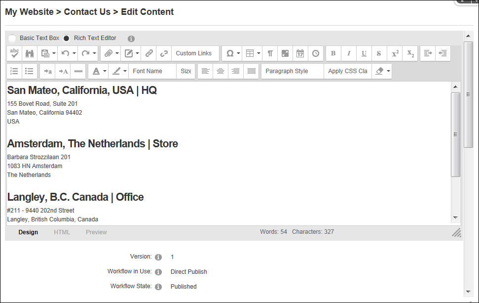

The DotNetNuke.RadEditorProvider is the default RTE provider packaged with DNN (6.0+). It provides rich text editing tools for numerous modules including the HTML, FAQ, Announcements and Events modules.
SuperUsers can modify the toolbar and editor configurations as well as create unique configurations.

The DotNetNuke.RadEditorProvider Editor